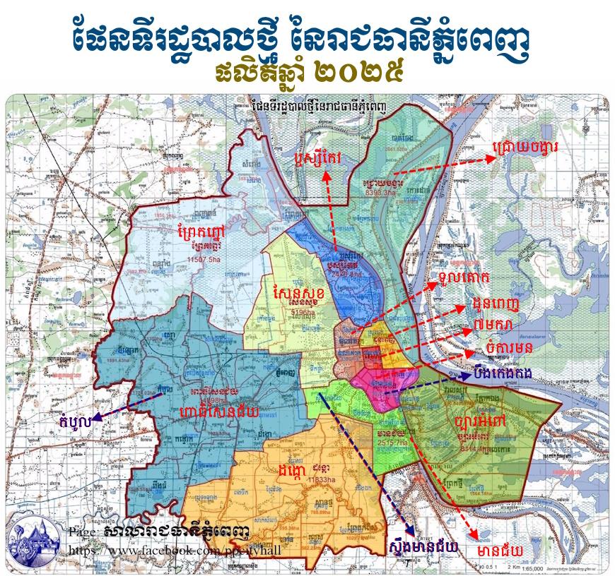
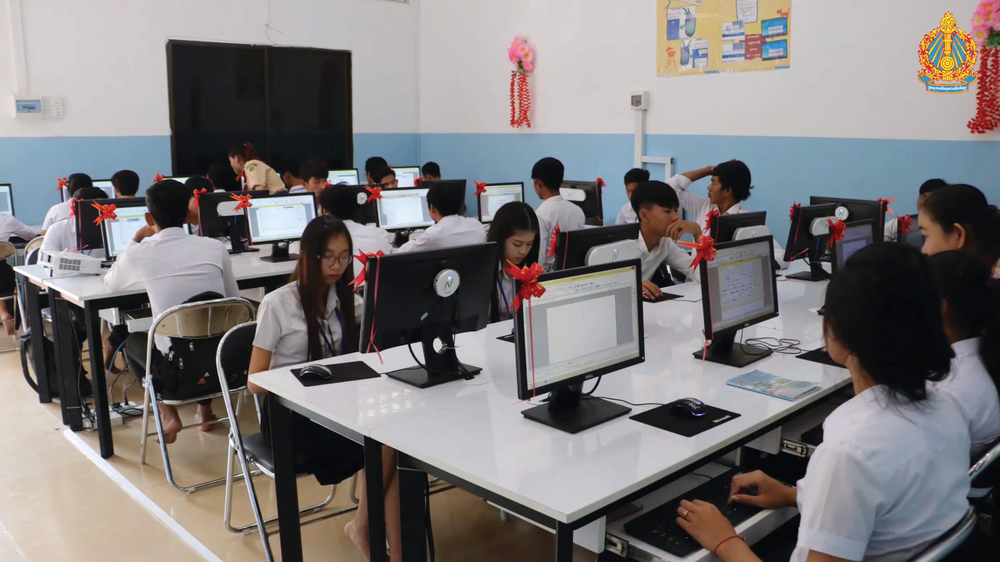
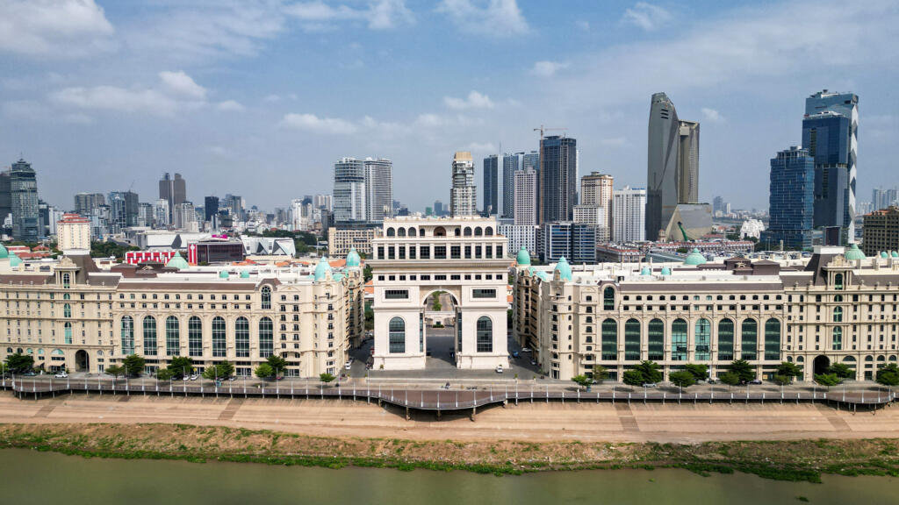
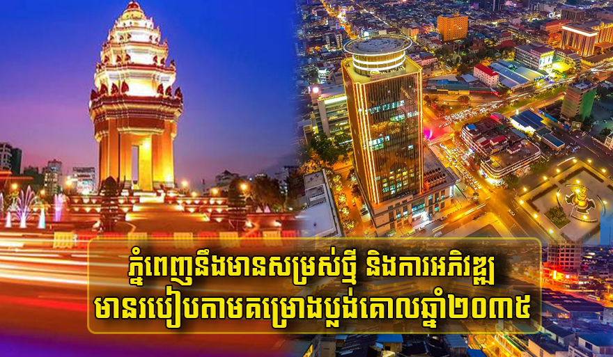

សូមស្វាគមន៍មកកកាន់
រាជធានីភ្នំពេញ

ខាងក្រោមនេះអ្នកនឹងអាចយល់ដឹងអំពីព័ត៌មានក្នុងរាជធានីភ្នំពេញ
មាតិការ
១.ប្រវតិ្តរាជធានីភ្នំពេញ..................................................................................។
២.ទីតាំងភូមិសាស្ត្រ.........................................................................................។
៣.ប្រជាជន និងវប្បធម៌..................................................................................។
៤.ស្ថាបត្យកម្ម និងសំណង់សំខាន់ៗ................................................................។
៥.ការអប់រំ និងស្ថាប័នសិក្សា...........................................................................។
៦.សេដ្ឋកិច្ច........................................................................................................។
៧.ទេសចរណ៍...................................................................................................។
៨.ការអភិវឌ្ឍនាអនាគត..................................................................................។
ប្រវតិ្តរាជធានីភ្នំពេញ
មាតិការាជធានី ភ្នំពេញ មានប្រវត្តិចាប់តាំងពីសតវត្សទី 15 នៅពេលដែលស្ត្រីម្នាក់ឈ្មោះ ព្រះឧណ្ណាល័យ (ព្រះមេដាយព Penh) បានសាងសង់វត្តលើភ្នំតូចមួយ ហើយរកឃើញព្រះបដិមាពីរព្រះ។ ភ្នំនោះបានក្លាយជា “វត្តភ្នំ” ដែលជាមូលហេតុឈ្មោះ “ភ្នំពេញ”។ ក្រោយមកក្នុងឆ្នាំ 1434 ព្រះបាទព្រាជាអង្គវរ្ម័ន បានផ្លាស់រាជធានីមកទីនេះ។ ភ្នំពេញក្លាយជាមជ្ឈមណ្ឌលនយោបាយ សេដ្ឋកិច្ច និងវប្បធម៌របស់ប្រទេសកម្ពុជា។ ក្នុងសម័យអាណានិគមបារាំង ភ្នំពេញត្រូវបានអភិវឌ្ឍឲ្យមានផ្លូវ អគារ និងទីផ្សារទំនើប ប្រៀបបានជាទីក្រុងស្អាតបំផុតមួយនៅអាស៊ីអាគ្នេយ៍។ បច្ចុប្បន្ន ភ្នំពេញជាមូលដ្ឋាននយោបាយ និងសេដ្ឋកិច្ចធំជាងគេបង្អស់ក្នុងប្រទេស។
ទីតាំងភូមិសាស្ត្រ
មាតិការាជធានី ភ្នំពេញ ស្ថិតនៅភាគកណ្ដាលនៃប្រទេសកម្ពុជា ដោយមានផ្ទៃក្រឡាប្រមាណ ៦៧៨.៤៦ គីឡូម៉ែត្រការ៉េ។ ទីក្រុងនេះស្ថិតនៅកន្លែងជួបជុំរវាងទន្លេបីគឺ ទន្លេមេគង្គ, ទន្លេបាសាក និងទន្លេសាប ដែលជាតំបន់មានសារៈសំខាន់ផ្នែកសេដ្ឋកិច្ច និងដឹកជញ្ជូន។ ភ្នំពេញមានព្រំប្រទល់ជាមួយខេត្តកណ្ដាលគ្រប់ទិសទាំងបួន។ ភូមិសាស្ត្រនៃទីក្រុងភាគច្រើនជាវាលទាប មានបាតទឹកល្អសម្រាប់កសិកម្ម និងមានតំបន់កណ្តាលជាទីក្រុងអភិវឌ្ឍសេដ្ឋកិច្ច។ ទីតាំងនេះបានធ្វើឲ្យភ្នំពេញក្លាយជាមជ្ឈមណ្ឌលនយោបាយ សេដ្ឋកិច្ច និងទេសចរណ៍សំខាន់បំផុតនៃប្រទេសកម្ពុជា។
ប្រជាជន និងវប្បធម៌
មាតិការាជធានី ភ្នំពេញ មានប្រជាជនច្រើនជាង ២លាននាក់ ដែលភាគច្រើនជាជនជាតិខ្មែរ និងជាពុទ្ធសាសនិក។ ក្រៅពីនេះ ក៏មានជនជាតិភាគតិចដូចជា ចិន វៀតណាម និងជនបរទេសផ្សេងៗដែលរស់នៅ និងធ្វើអាជីវកម្ម។ ជីវភាពរបស់ប្រជាជនមានលក្ខណៈចម្រុះ ពីការរស់នៅជាមនុស្សជនបទដែលចូលមករកការងារនៅទីក្រុង ដល់ជីវភាពទំនើបក្នុងសង្គមទីក្រុង។ វប្បធម៌ភ្នំពេញជាការលាយបញ្ចូលគ្នារវាងប្រពៃណីខ្មែរបុរាណ ដូចជា ពិធីបុណ្យចូលឆ្នាំខ្មែរ បុណ្យអុំទូក និងរបាំប្រពៃណី ជាមួយនឹងឥទ្ធិពលបរទេស និងវប្បធម៌សកល។ ភ្នំពេញក្លាយជាទីក្រុងដែលបន្តរក្សាតម្លៃបុរាណខ្មែរ ខណៈពេលកំពុងអភិវឌ្ឍទៅជាទីក្រុងសកល។
ស្ថាបត្យកម្ម និងសំណង់សំខាន់ៗ
មាតិកាភ្នំពេញមានស្ថាបត្យកម្មអស្ចារ្យ ដែលសម្រស់ចម្រុះពីបុរាណទៅទំនើប។ វត្ត និងប្រាសាទដូចជា ព្រះបរមរាជវាំង និង វត្តភ្នំ បង្ហាញពីសិល្បៈខ្មែរ និងប្រពៃណីបុរាណ។ ក្នុងសម័យអាណានិគមបារាំង អគារបែបអ៊ឺរ៉ុប តូចធំ ចំណាត់ថ្នាក់ផ្លូវ និងផ្សារ សាងសង់ឡើងជាទីក្រុងស្អាត និងទំនើប។ ការរីកចម្រើននៃទីក្រុងក៏បង្កើតអគារទំនើប និងសេវាកម្មទំនើប ដូចជា អគារសម្រាប់អាជីវកម្ម ហាងស្កុត និងសណ្ឋាគារ។ ទីក្រុងភ្នំពេញកំពុងផ្ទុកសម្រស់ប្រពៃណី និងភាពទំនើបក្នុងពេលតែមួយ, បង្ហាញពីសមិទ្ធផលនៃការអភិវឌ្ឍប្រពៃណី និងសេដ្ឋកិច្ច។
ការអប់រំ និងស្ថាប័នសិក្សា
មាតិការាជធានី ភ្នំពេញ ជាមជ្ឈមណ្ឌលអប់រំសំខាន់បំផុតក្នុងប្រទេសកម្ពុជា។ នៅទីនេះមានសាកលវិទ្យាល័យ និងវិទ្យាស្ថានជាច្រើន ដូចជា សាកលវិទ្យាល័យភូមិន្ទភ្នំពេញ និង សាកលវិទ្យាល័យភូមិន្ទសាធារណៈ។ ក៏មានសាលាបឋមសិក្សា សាលាមធ្យមសិក្សា និងវិទ្យាល័យសម្រាប់យុវជនជាច្រើនផងដែរ។ មជ្ឈមណ្ឌលបណ្តុះបណ្តាលវិជ្ជាជីវៈ និងវិទ្យាស្ថានឯកជនក៏មានភាពសកម្ម ដើម្បីផ្តល់ឱកាសសិក្សា និងជំនាញវិជ្ជាជីវៈទាន់សម័យ។ ការអប់រំក្នុងភ្នំពេញមិនត្រឹមតែផ្តល់ចំណេះដឹងទេ ប៉ុន្តែជួយបង្កើតជំនាញ និងភាពប្រកបដោយវិជ្ជាជីវៈសម្រាប់យុវជនក្នុងសង្គមសកល។
សេដ្ឋកិច្ច
មាតិការាជធានី ភ្នំពេញ គឺជាមជ្ឈមណ្ឌលសេដ្ឋកិច្ចធំជាងគេក្នុងប្រទេសកម្ពុជា។ ទីក្រុងនេះផ្តោតលើឧស្សាហកម្មសេវាកម្ម ពាណិជ្ជកម្ម និងសំណង់អគារទំនើប។ ផ្នែកសេដ្ឋកិច្ចផ្សេងទៀតរួមមាន អាជីវកម្មតូចៗ ហាងអ៊ីនធើណិត និងទីផ្សារផលិតផលស្រូវ និងផលិតផលកសិកម្មពីជុំវិញប្រទេស។ ការវិនិយោគពីបរទេសក៏ចូលរួមជំរុញការរីកចម្រើនទាំងផ្នែកបណ្តុះបណ្តាល វិស័យសេវាកម្ម និងទីផ្សារប្រកួតប្រជែង។ អគារពាណិជ្ជកម្ម និងមជ្ឈមណ្ឌលហិរញ្ញវត្ថុច្រើនបានកើតឡើងនៅក្នុងទីក្រុង ដើម្បីគាំទ្រការអភិវឌ្ឍសេដ្ឋកិច្ចសកល និងការងារអាជីវកម្ម។
ទេសចរណ៍
មាតិការាជធានី ភ្នំពេញ ជាគោលដៅទេសចរណ៍ដ៏សំខាន់ ដែលទាក់ទាញទាំងភ្ញៀវក្នុង និងក្រៅប្រទេស។ ទីក្រុងនេះមានស្ថាបត្យកម្ម និងទីកន្លែងប្រវត្តិសាស្ត្រជាច្រើន ដូចជា ព្រះបរមរាជវាំង, វត្តភ្នំ, សារមន្ទីរទួលស្លែង និង ផ្សារធំ។ បូករួមជាមួយទេសភាពទន្លេ មេគង្គ, ទន្លេបាសាក់ និង ទន្លេច្រាចាំងវ៉ា ដែលបង្កើតឲ្យទីក្រុងមានសោភ័ណភាពពិសេស។ ភ្នំពេញក៏ជាមជ្ឈមណ្ឌលវប្បធម៌ ដែលមានពិធីបុណ្យប្រពៃណីជាច្រើន ដូចជា បុណ្យអុំទូក និងបុណ្យចូលឆ្នាំខ្មែរ។ លើសពីនេះ មានសណ្ឋាគារ មជ្ឈមណ្ឌលទំនើប និងភោជនីយដ្ឋានខ្មែរ-អន្តរជាតិ ដែលធ្វើឲ្យភ្នំពេញក្លាយជាទីក្រុងទេសចរណ៍មានភាពទំនើប និងចម្រុះ។
ការអភិវឌ្ឍនាអនាគត
មាតិការាជធានី ភ្នំពេញ កំពុងស្ថិតក្នុងដំណាក់កាលអភិវឌ្ឍយ៉ាងលឿន ដើម្បីក្លាយជាទីក្រុងសម័យទំនើប និងប្រកួតប្រជែងជាមួយតំបន់អាស៊ីអាគ្នេយ៍។ គម្រោងអភិវឌ្ឍន៍រួមមាន ការសាងសង់អគារលំនៅដ្ឋានខ្ពស់ៗ, មជ្ឈមណ្ឌលពាណិជ្ជកម្មទំនើប, ផ្លូវល្បឿនលឿន និងប្រព័ន្ធដឹកជញ្ជូនសាធារណៈ។ រដ្ឋាភិបាលក៏ផ្តោតលើការគ្រប់គ្រងសណ្តាប់ធ្នាប់ទីក្រុង ការអភិវឌ្ឍបៃតង និងការពារបរិស្ថាន។ លើសពីនេះ ការវិនិយោគបរទេស និងការចូលរួមរបស់ឯកជនកំពុងជំរុញឱ្យទីក្រុងមានភាពទំនើបខ្ពស់។ ទិសដៅអនាគតនៃភ្នំពេញគឺក្លាយជាមជ្ឈមណ្ឌលសេដ្ឋកិច្ច ទេសចរណ៍ និងវប្បធម៌សកល។
